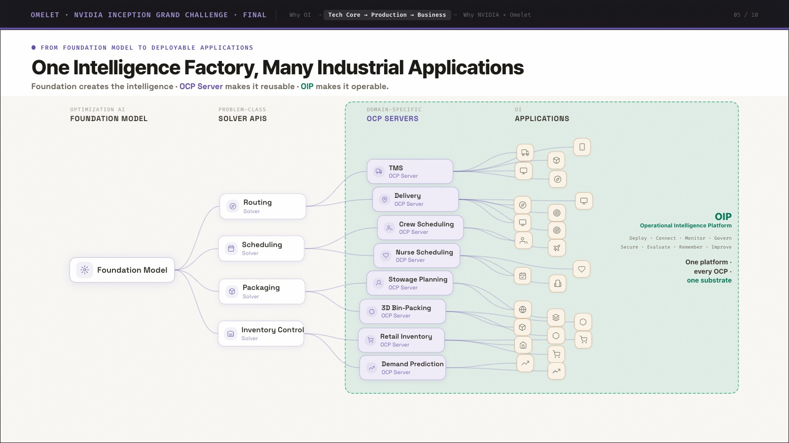

NVIDIA integration and product architecture
T5 · Slides 4–7 and 9 · Present scope, integration work and roadmap
| Component / product | State in the submitted deck | Evidence and boundary |
|---|---|---|
| CUDA foundation training / test-time search | Integrating | Architecture. Integration work is identified separately from shipped customer adoption. |
| cuOpt behind the OCP solver contract | Integrating, VRP first | Integration plan; MILP, Retail A, Solomon experiments. Standalone benchmark results do not prove an integrated, shipped backend. |
| LP / MIP integration | Next | A standalone MILP experiment can coexist with future OCP LP/MIP integration. No completed integration claim is made here. |
| Isaac Sim | Future / next phase | Roadmap only. No shipped-use evidence supplied. |
| OI Factory, OI Studio, OI Foundry; OCP / OIP | Product implementation demonstrated | Watch the 34-second product walkthrough; OCP / OIP diagram. Recorded software interfaces show project workflows, Studio chat/results and customer applications. |
Public product evidence
Architecture from the submitted pitch

Claim boundaries
The deck’s zero-hard-violation and KPI-at-least-baseline statements describe its validation gate; per-customer acceptance records are not attached. Example questions such as reducing nurse overtime by 15% and animation counters are illustrative, not measured outcomes or audited asset totals. Reuse, memory, governance and learning capabilities require execution/deployment evidence to qualify as shipped customer-product claims.
Factory creates validated capabilities; Studio supports exploration and analysis; Foundry assembles customer applications. Customer users operate the resulting applications. These roles are kept distinct from the OCP / application-kit assets and OIP operating infrastructure.